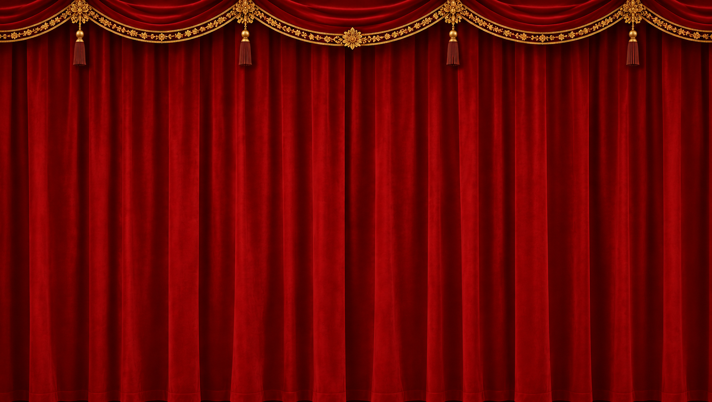

Wayang Kulit
Mainkan dua wayang kulit pada kelir yang diterangi lampu. Webcam kamu melacak kedua tangan, seperti seorang dalang memegang batang.
D tari FG balik wayang kiri / kanan H sembunyikan UI C kalibrasi ulang kedalaman V kamera P popout kamera M musik